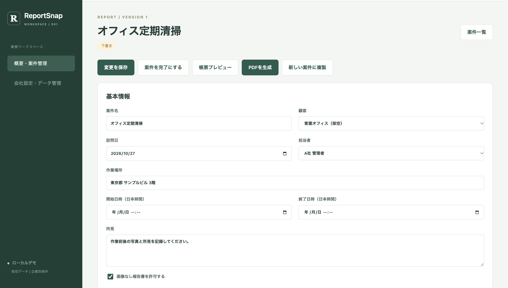
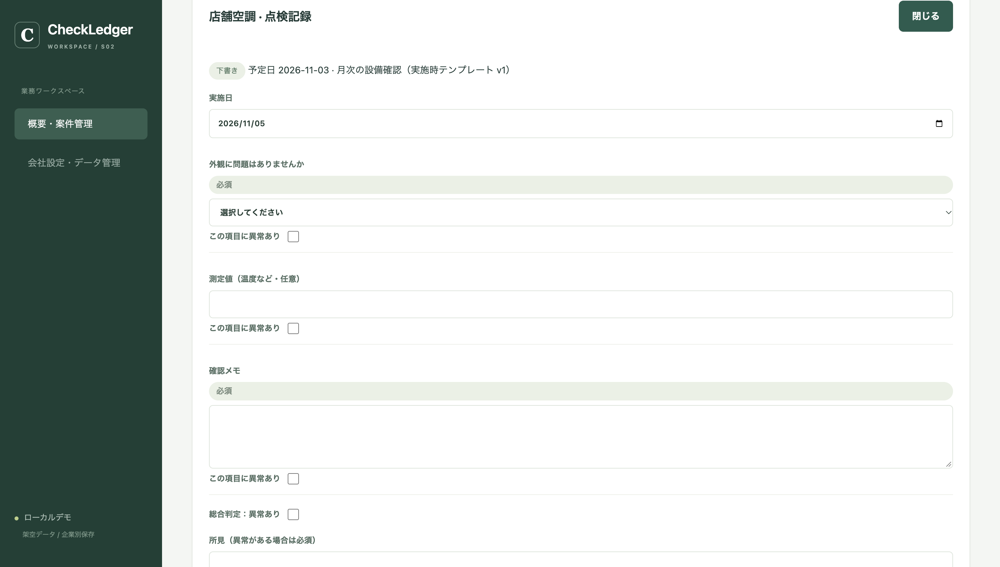
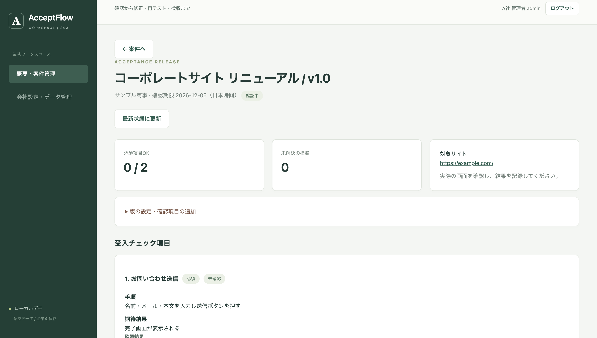
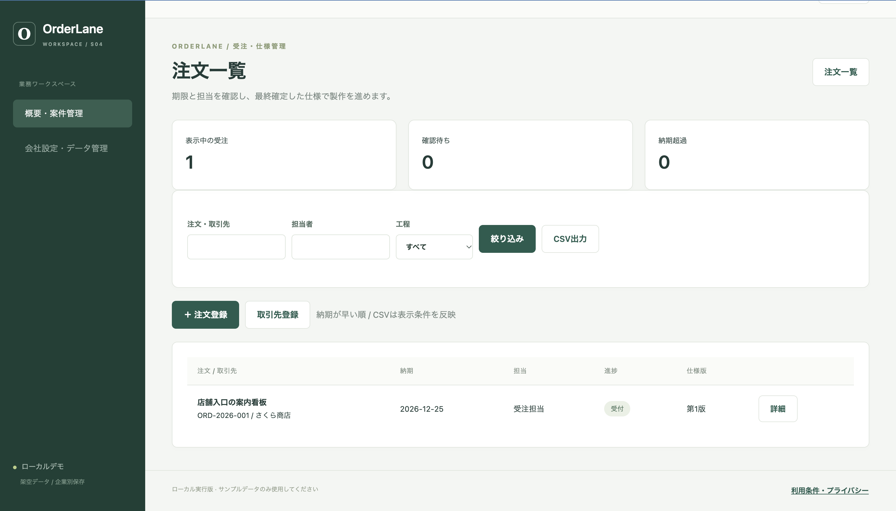

PROJECT 01
ReportSnap
現場作業の写真・記録を整理し、報告書PDFを作成するWebアプリ。
検証: 自動テスト70件成功（提出済みローカル報告に基づく）

業務向けWebアプリケーションの設計・実装から、テスト設計・自動テストまで。個人開発のプロトタイプ4製品を通じて、実装と検証の取り組みを公開しています。
いずれも個人開発のローカル動作プロトタイプです。商用導入実績を意味するものではありません。
現場作業の写真・記録を整理し、報告書PDFを作成するWebアプリ。

店舗や施設の設備点検を管理。点検計画、チェック結果、履歴を一元化。

Web制作案件の検収・修正・再確認・承認を、版管理付きで扱うWebアプリ。

オーダーメイド案件の受注・変更・納品までの進捗を追跡するWebアプリ。

見た目だけでなく、業務を通して使えること、異常系に対応できることを重視しています。
操作手順、入力条件、期待結果を明文化します。
正常系・異常系・境界値・権限・競合更新などを検証します。
GitHub Actionsで継続的に実行する仕組みを追加予定です。※構築後に文言更新
QUALITY ASSURANCE
4つの業務向けWebアプリケーションに対して、 正常系・異常系・権限管理・データ整合性などの 自動テストを実装しています。
自動テスト成功件数
失敗・例外・スキップ
画面検証項目
検証対象製品
| 製品 | 自動テスト | 画面検証 |
|---|---|---|
| ReportSnap | 70件成功 | 4項目 |
| CheckLedger | 87件成功 | 3項目 |
| AcceptFlow | 71件成功 | 4項目 |
| OrderLane | 73件成功 | 3項目 |
GitHub Actionsを用いて、 ソースコード変更時に自動テストを実行する CI環境を構築しています。
検証結果：2026年10月27日付ローカル検証報告。 すべての不具合や脆弱性が存在しないことを 保証するものではありません。
小規模Webシステムの開発、テストケース作成、テスト自動化について相談を受け付けます。
お問い合わせは GitHubプロフィール からお願いします。